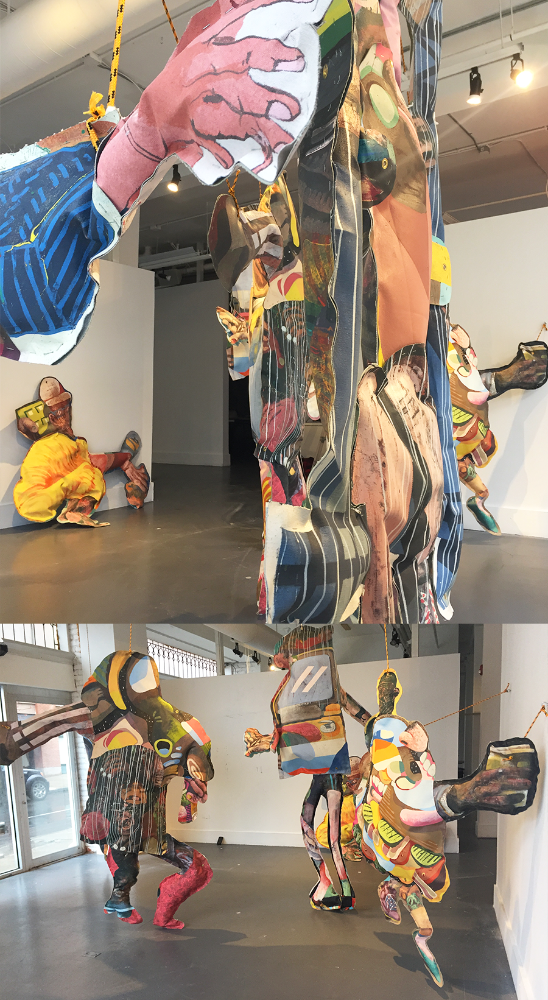
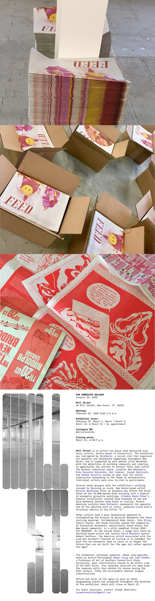

/////SELECTED EXHIBITIONS //////////////////////////////////////////////////////////////////////////////////////////////////////////////////////////////////////////////////
Statues Also Die, Real Art Ways, Hartford, Connecticut
October 25 2020 - January 24 2021 Link to exhibit website
Curated by Sarah Fritchey. Featuring artists Rebecca Belmore, Nate Lewis, Cassils, Jeffrey Meris, Nick Cave, Paper Monuments, Nona Faustine, FEED, Paul Ramirez Jonas,Doreen Garner, Lee Mixashawn Rozie, Xandra Ibarra, Veo Veo Design, and Marisa Williamson.
This exhibition considers the roles artists play in monument removal and making– as storytellers who unearth the histories and meanings of existing monuments, activists who participate in direct actions that lead to monument removal, and civic designers who work with government officials to envision new processes for including everyday people in monument-making. As a whole, the featured artworks and projects reject a top-down approach, consider who and what we remember, and what places, events, and movements matter.
Download the Statues Also Die catalogue. Photos below by John Groo.

City-Wide Open Studios 2020 : Who Governs?
Doom-Haven
October 1- October 31 2020 Link to exhibit website
The festival is hosted by ArtSpace New Haven every year, and in 2020 was migrated to an online platform. However Eben Kling and Aude Jomini used the opportunity to test an early demo of Doom-Haven with visitors live, in a studio installation of physical process materials from the project. Testing feedback allowed artists to better tailor the gameplay and experience to a wide range of participants. This forum also allowed the artists to share their back-end process with a number of scheduled visitors. Despite the interactive setup, COVID precautions had to be strictly adhered to, yet the artists welcomed the challenge and experiment.

The View From Here, ArtSpace, New Haven, Connecticut
March 20 - June 15, 2020 Link to exhibit website
This quarantine-themed show featured collaborative installation Great Hang, Bad Parts, by Eben Kling and Aude Jomini. The artists used the occasion to experiment with repurposing old paintings by Kling into new humanoid sculptures, performing an act of pantry re-hash in times of limited resources.

Mill Street Project, 26 Mill Street, New Haven, Connecticut
February 22 - March 21 2020 Link to exhibit website
On the occasion of this show, artists were asked to respond to the idea of “monumentality”. FEED proposed instead
an ephemeral pamphlet, manifest as an oversized stack of free newsprint for the taking.
FEED:The Monument,Issue #1, was published for this venue.
